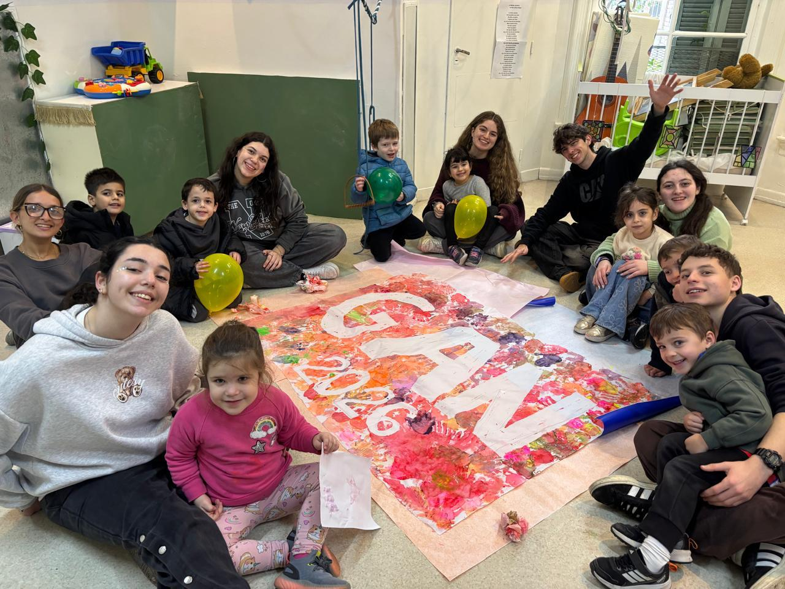
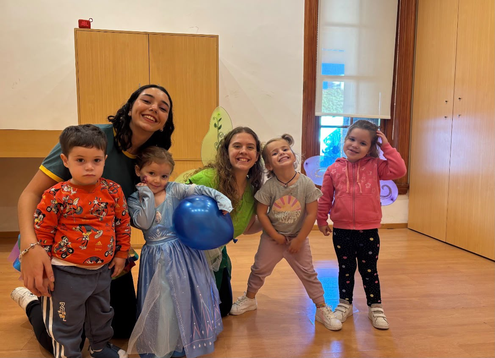
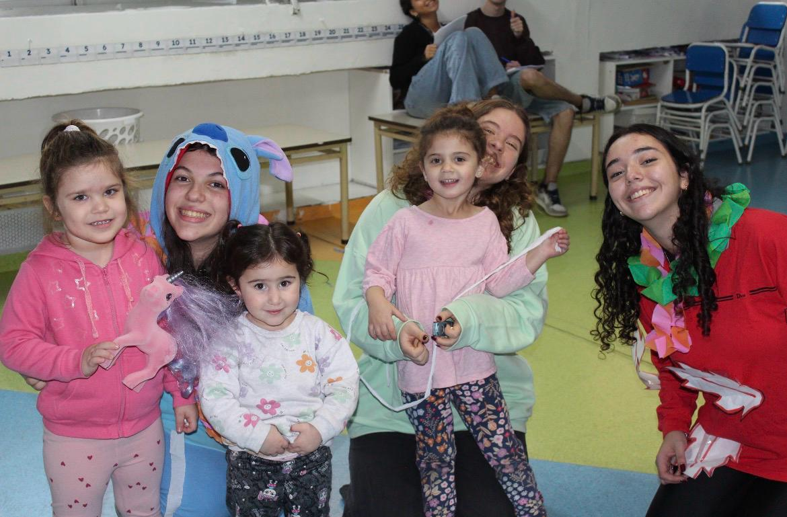

Hola, soy
Maga
Madrijá.
Me gusta acompañar, jugar y crear momentos con detalle, cariño y mucho color.


scrolleá
Hola, soy
Madrijá.
Me gusta acompañar, jugar y crear momentos con detalle, cariño y mucho color.
scrolleá
01 / SOBRE MÍ
Soy Maga y soy madrijá. Me encanta acompañar a los chicos y cuido cada detalle para que cada encuentro salga lindo. Trabajo con cariño y responsabilidad, y siempre con muchas ganas de pasarla bien.
Madrijá Sociable Detallista Responsable
02 / MADRIJÁ
Planificar, jugar, cuidar y acompañar a los chicos. Ser madrijá me enseñó a organizarme, a trabajar en equipo y a ser responsable. Cada actividad me deja algo nuevo, y ver a los chicos disfrutar es lo mejor de todo.



03 / ACTIVIDADES
© 2026 Maga